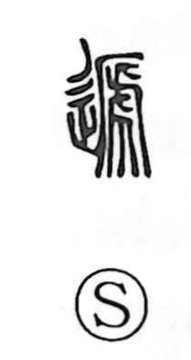

逓

Uncategorized
Kun: | On: tei
by turns ・ alternately ・ successive ・ to send
Explanation
Originally written 遞, this is a picto-phonetic character. The phonetic element 虒, an image of a tiger’s hide being torn, conveys ideas of stripping away and alternation, which pair with the movement element to express things replacing one another in sequence. Hence the core sense of acting by turns, relieving or substituting in succession—aptly echoed in the Lüshi Chunqiu’s line about states “rising and falling alternately.” From this notion of successive change the character extended to sending something on in relay, as in 逓信 (conveyance, post), and to uses like 逓減 and 逓増 for stepwise decrease and increase.